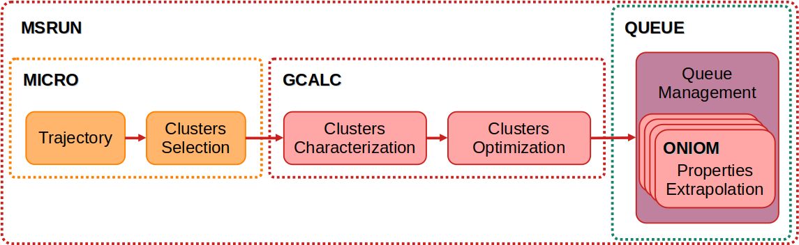

3. Applications#
PERFORMING APPLICATIONS
In the third stage, following trajectory extraction, the truncated trajectory file simbox.try.xyz is generated. The MACRO (under development) and MICRO modules can be used for the treatment of biomolecules or for microsolvation analysis, respectively.
PERFORMING THE MICROSOLVATION TREATMENT
In the first step of the microsolvation treatment, the module selects N low-energy clusters, each composed of M solvent molecules. The value of M may be: (1) determined from a prior radial distribution function (RDF) analysis using the DATAS module; (2) defined based on the solute-to-solvent ratio at a user-specified concentration; or (3) calculated automatically, using a cutoff distance corresponding to the diameter of a solvation sphere. The extraction is performed using the following command structure:
solvate ⟨simbox.trj.xyz⟩ -micro [⟨-options⟩]
After this extraction, the selected clusters are stored in the file solute.trj.xyz. In the second step, this file serves as input to optimize the hydrogen bonds within the microsolvation clusters. Subsequently, all microsolvation clusters can be optimized (with constraints, at the xTB level). Finally, the desired properties can be calculated based on user-specified configurations. This procedure is carried out using the following command structure:
solvate ⟨solute.trj.xyz⟩ -micro [⟨-options⟩]
Note
Various processing options for cluster treatment are available. The complete list can be accessed via the help menu of the MICRO module by executing the module name without any arguments on the command line. These procedures can be fully automated using the “-auto” option.
STAGE STRUCTURE
